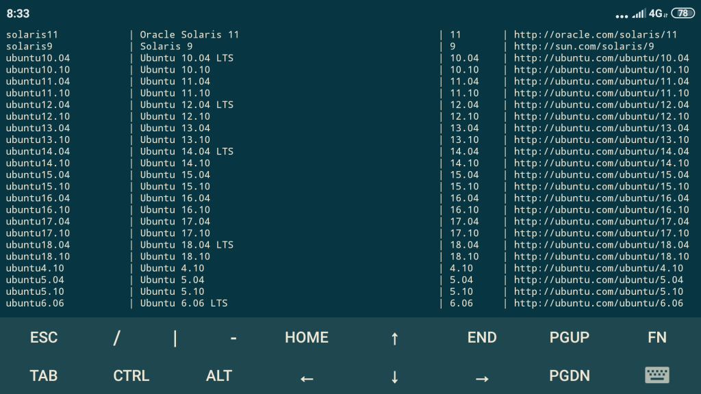

Установка и настройка KVM на Ubuntu Server
Сегодня в статье установим и настроим KVM сервер на операционной системе Ubuntu Server 20.04 LTS.
KVM (kernel-based virtual machine) — это программное обеспечения для Linux, использующее аппаратные средства x86-64-совместимых процессоров для работы с технологией виртуализации Intel VT или AMD SVM.
Содержание
1. Подготовка к установки KVM на Ubuntu Server
2. Установка KVM на Ubuntu Server
3. Установка виртуальной машины Ubuntu 16.04 на KVM
5. Установка Windows 7 на kvm с помощью virt-install
Подготовка к установки KVM на Ubuntu Server
Для начала давайте проверим поддерживается ли виртуализация Intel VT или AMD-V нашим процессором, для этого установим небольшую утилиту:
sudo apt install cpu-checker
Далее набираем команду:
kvm-ok
Если вывод будет такой как ниже, то виртуализация поддерживается вашим процессором:
INFO : /dev/kvm exists KVM acceleration can be used
Ещё один способ проверить поддерживается ли технология вашим CPU это посмотреть его флаги:
egrep -c "svm|vmx" /proc/cpuinfo
Если вывод не пустой, значит поддерживается, и можно переходить к установке KVM .
Установка KVM на Ubuntu Server
Для того чтобы установить KVM из терминала набираем следующую команду:
sudo apt install qemu-kvm virtinst libvirt-clients libvirt-daemon-system
Для более ранних ОС:
sudo apt install qemu-kvm libvirt-bin virtinst
Следующим шагом при реализации kvm виртуализации будет настройка сетевого моста на вашем сервере. Как это сделать я писал в этой статье.
Да чуть не забыл, управление виртуальными машинами из консоли производится при помощи утилиты virsh. Так что для начала можно посмотреть man или help данной утилиты:
man virsh
virsh -h
Давайте рассмотрим некоторые полезные команды необходимые для управления нашими будущими гостевыми ОС.
Смотрим список доступных сетей:
sudo virsh net-list
Просмотр информации о конкретной сети (с именем default):
sudo virsh net-info default
Если уже был сконфигурирован сетевой мост то доступные интерфейсы можно посмотреть так:
sudo virsh iface-list
Смотрим список доступных оптимизаций для гостевых ОС:
sudo virt-install --os-variant list
У меня данная команда не заработала. Если вы столкнулись с такой же проблемой, то для просмотра доступных гостевых ОС проделываем следующее.
Устанавливаем необходимую утилиту:
sudo apt install libosinfo-bin
Теперь набираем команду:
osinfo-query os
Вывод будет примерно такой: 
Ну вот, когда мы знаем всю интересующую нас информацию можно приступать к установке виртуальной машины.
Установка виртуальной машины Ubuntu 16.04 на KVM
В качестве гостевой системы установим Ubuntu 16.04 с GUI. Также для меня пути по умолчанию не годятся:
Поэтому создаём директорию /home/kvm, а в ней две директории для ISO образов и образов наших гостевых ОС.
sudo mkdir -p /home/kvm/{iso,vhdd}
Качаем ISO-образ системы
в директорию /home/kvm/iso созданную ранее:
sudo wget -P /home/kvm/iso https://obu4alka.ru/wp-content/Install/Install_OS/ubuntu-16.04.5-desktop-amd64.iso
После завершения скачивания создадим нашу виртуальную машину на дистрибутиве Ubuntu Desktop 16.04 с 2 CPU, 2 Гб RAM и 20 Гб места на диске, подключенную к сети br0.:
sudo virt-install \
--virt-type=kvm \
--name ubuntu-desktop\
--ram=2048 \
--vcpus=2 \
--os-variant=ubuntu16.04 \
--autostart \
--cdrom=/home/kvm/iso/ubuntu-16.04.5-desktop-amd64.iso \
--network=bridge:br0,model=virtio \
--graphics vnc,listen=0.0.0.0,password=qwerty \
--disk path=/home/kvm/vhdd/ubuntu16.04.img,size=20
Теперь давайте разберемся что же мы тут написали:
--name — имя виртуальной машины
--ram — количество выделенной памяти.
--vcpus — количество ядер выделенных профессоров
--os-variant — оптимизация под конкретную гостевую ОС.
--autostart — автоматический запуск гостевой ОС.
--cdrom — расположение iso образа устанавливаемой ОС.
--network — к какой сети будет подключена наша виртуальная машина,model=virtio — модель сетевого адаптера.
--graphics — способ подключения к нашей гостевой ОС (в данном случае vnc), listen=0.0.0.0,password=qwerty — на каких IP интерфейсах принимать соединения и с каким паролем).
--disk path — расположение образа виртуального hdd (диска), size=20 — размер диска 20 Гбайт.
Давайте теперь рассмотрим основные команды для работы с KVM.
Получение списка всех гостевых ОС:
sudo virsh list --all
Получение информации о конкретной гостевой ОС:
sudo virsh dominfo ubuntu-desktop
Запустить гостевую ОС:
sudo virsh start ubuntu-desktop
Остановить гостевую ОС:
sudo virsh shutdown ubuntu-desktop
Приостановить гостевую ОС:
sudo virsh suspend ubuntu-desktop
Возобновить работу гостевой ОС:
sudo virsh resume ubuntu-desktop
Выключить гостевую ОС:
sudo virsh destroy ubuntu-desktop
Перезагрузить гостевую ОС:
sudo virsh reboot ubuntu-desktop
Сбросить гостевую ОС:
sudo virsh reset ubuntu-desktop
Склонировать гостевую ОС:
sudo virt-clone -o ubuntu-desktop -n ubuntu-desktop-clone \
--file /home/kvm/vhdd/ubuntu-desktop-clone.img
Включить/выключить автозапуск:
sudo virsh autostart ubuntu-desktop
sudo virsh autostart \
--disable ubuntu-desktop
Запуск virsh в диалоговом режиме (все команды в диалоговом режиме — как описано выше):
sudo virsh
Установка Windows 7 на kvm с помощью virt-install
sudo virt-install \
--name WIN-7 \
--autostart \
--network=bridge:br0 \
--ram 2048 \
--disk path=/home/kvm/vhdd/wIN-7.img,size=30 \
--cdrom /home/Install/Install_OS/Windows\ 7\ Ultimate.iso \
--graphics vnc,listen=0.0.0.0,password=qwerty
Обратите внимание на Слэш в имени пути к iso-образу. Оборотный Слэш ставится если у вас в названии файла есть пробелы.
На сервере вводим:
virsh vncdisplay WIN-7
команда покажет, на каком порту работает VNC для машины WIN-7. У меня было:
:1
:1 значит, что нужно к 5900 прибавить 1 — 5900 + 1 = 5901.
Для более комфортной работы с виртуальными машинами можно установить virt-maneger и с него производить установку и настройку всех виртуальных машин.
Для того чтобы установить virt-manager нам понадобится:
Сервер с графическим интерфейсом (Ubuntu Desktop)
ПК с графическим интерфейсом (Ubuntu Desktop | Linux Mint)
Я же буду использовать свой ПК с операционной системой Linux Mint 19. И так для установки пакета virt-manager в терминале набираем:
sudo apt install virt-manager
Если есть вопросы, то пишем в комментариях.
Также можете помочь проекту, заранее всем СПАСИБО!!!
.